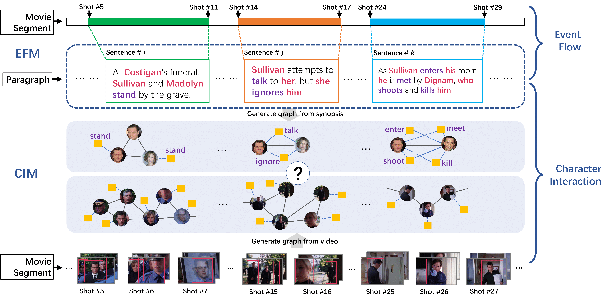

Abstract
Inspired by the remarkable advances in video analytics, research teams are stepping towards a greater
ambition – movie understanding. However, compared to those activity videos in conventional datasets,
movies are significantly different. Generally, movies are much longer and consist of much richer
temporal structures. More importantly, the interactions among characters play a central role in
expressing the underlying story. To facilitate the efforts along this direction, we construct a dataset
called Movie Synopses Associations (MSA) over 327 movies, which provides a synopsis for each movie,
together with annotated associations between synopsis paragraphs and movie segments. On top of this
dataset, we develop a framework to perform matching between movie segments and synopsis paragraphs. This
framework integrates different aspects of a movie, including event dynamics and character interactions,
and allows them to be matched with parsed paragraphs, based on a graph-based formulation. Our study
shows that the proposed framework remarkably improves the matching accuracy over conventional
feature-based methods. It also reveals the importance of narrative structures and character interactions
in movie understanding.
Dataset
We proposed a new dataset called Movie Synopsis
Association
for cross modality
understanding. The associations between movie segments and synopsis paragraphs are provided.
These
annotations can
facilitate tasks such as video retrieval, caption generation, etc.
| Splits | Train | Val | Test | Total |
|---|---|---|---|---|
| # Movies | 249 | 28 | 50 | 327 |
| # Segments | 3329 | 341 | 824 | 4494 |
| # Shots / seg. | 96.4 | 89.8 | 76.9 | 92.3 |
| Duration / seg. | 427.4 | 469.6 | 332.8 | 413.3 |
| # Sents. / para. | 6.0 | 6.0 | 5.5 | 5.9 |
| # Words. / para. | 130.8 | 132.5 | 120.5 | 129.0 |
Materials
Citation
@InProceedings{Xiong_2019_ICCV,
author = {Xiong, Yu and Huang, Qingqiu and Guo, Lingfeng and Zhou, Hang and Zhou, Bolei and Lin, Dahua},
title = {A Graph-Based Framework to Bridge Movies and Synopses},
booktitle = {The IEEE International Conference on Computer Vision (ICCV)},
month = {October},
year = {2019}
}